John B. Calhoun, may he rest in peace,
was unavailable for comment.
Welcome to Mouse City
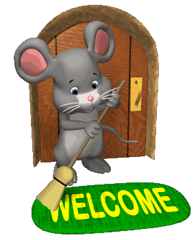
Welcome to Mouse City
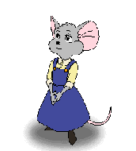
A place where starcrossed mice race for fame, fortune, cheese, and the chance for a better life.
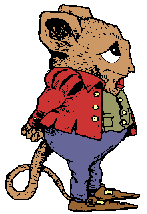
Every mouse has a story, especially if you're fluent in Squeak.
The Mice of Mouse City get royalty checks in the mail every month. When you click your computer mouse, you're supporting the wellbeing of little rodents with big dreams.
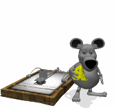
Cheese Theft has become something of a sport for the citizens of Mouse City. Much in the way that we humans jog in simulation of our escape from predators/our hunt for prey, so too do the mice simulate dangers to give urgency to their exercise and to honor their banditry past.
It seems it was just yesterday that ear and whisker, tooth and tail were the only tools a mouse could rely upon. Now, metamorphic biotech is poised to accelerate micekind into an exciting (if unnerving) future.
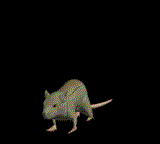
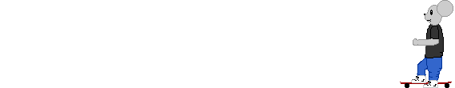
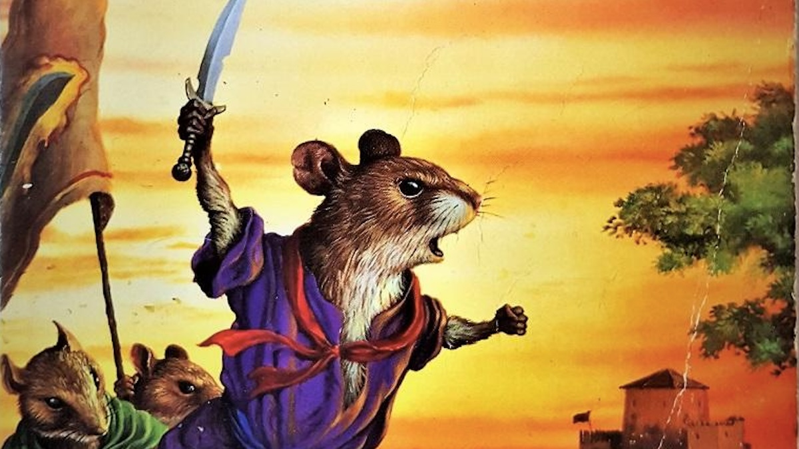
Though they are peaceful creatures, mice are very fond
of swashbuckling epics.
Mice filmmmakers who don't venture into the genre are, almost without exception, doomed to obscurity.
One of the great mouse filmmakers is named
Mouseton Scorsqueaksy.
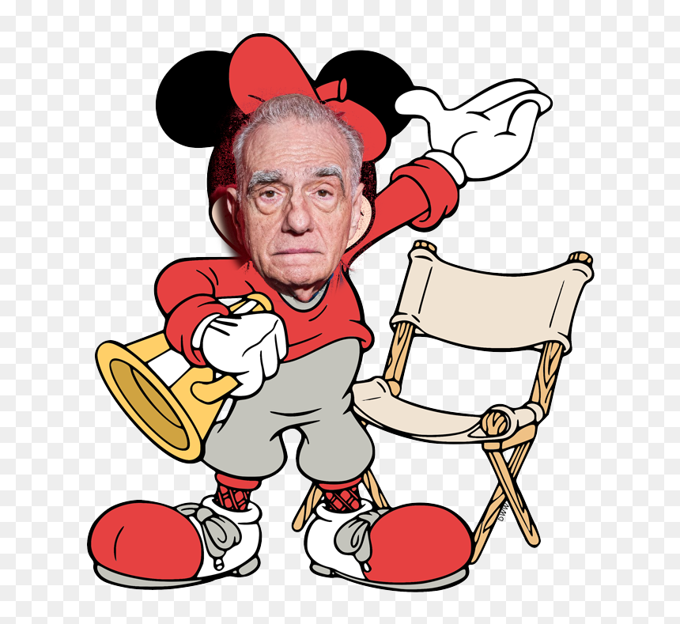
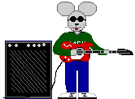
Musicians in Mouse City play electrifying updates on traditional mouse music, making use of tones well above human hearing range.
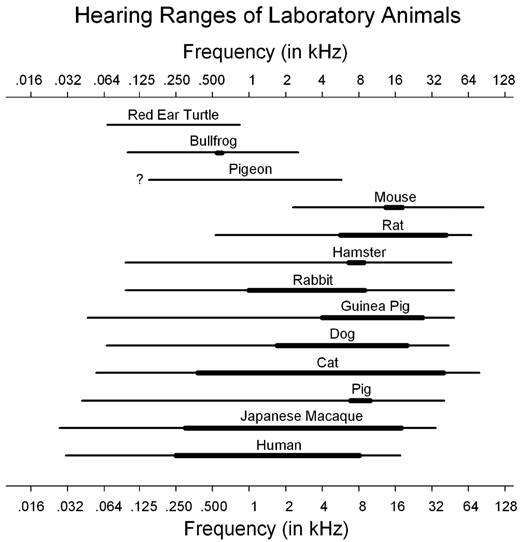
But fear not. . .
There are still quiet places (and quiet hours in the loudest places)
for those who seek them.
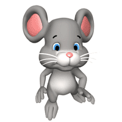
It is, after all,
a city of, by, and for Mice.
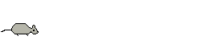
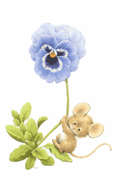
Megaflora (as mice perceive it)
plays an important role
in Mouse Architecture.
Some examples of mouse habitations. . .
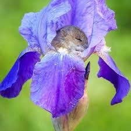
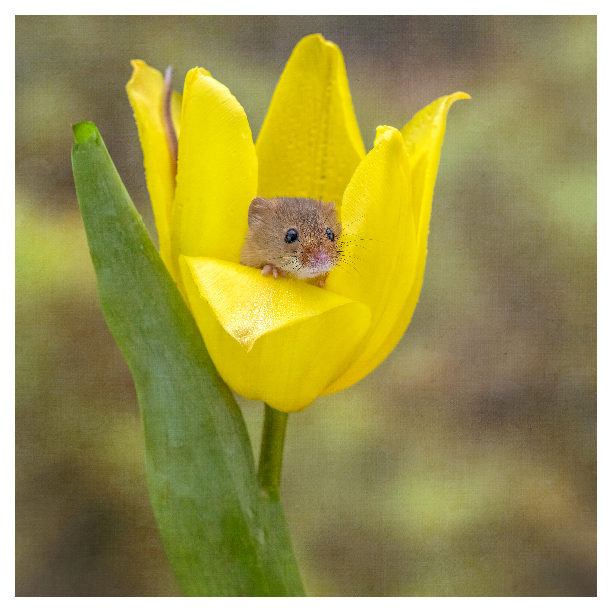
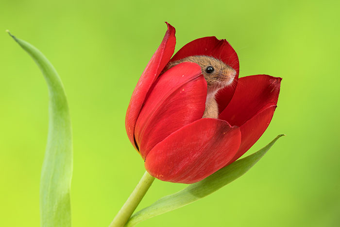
Some theorize that lab testing gave rise to the mice that founded Mouse City.
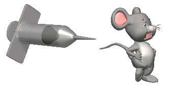
Others say this is just a murine iteration of The Rats of Nimh, a tale too fanciful to live anywhere other than the pages of a book.
John B. Calhoun, may he rest in peace,
was unavailable for comment.
For religious reasons,
mirrors are forbidden in Mouse City,
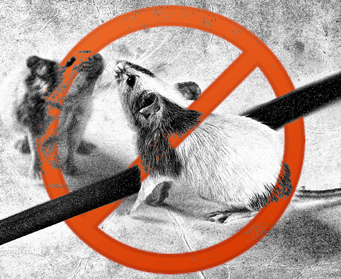
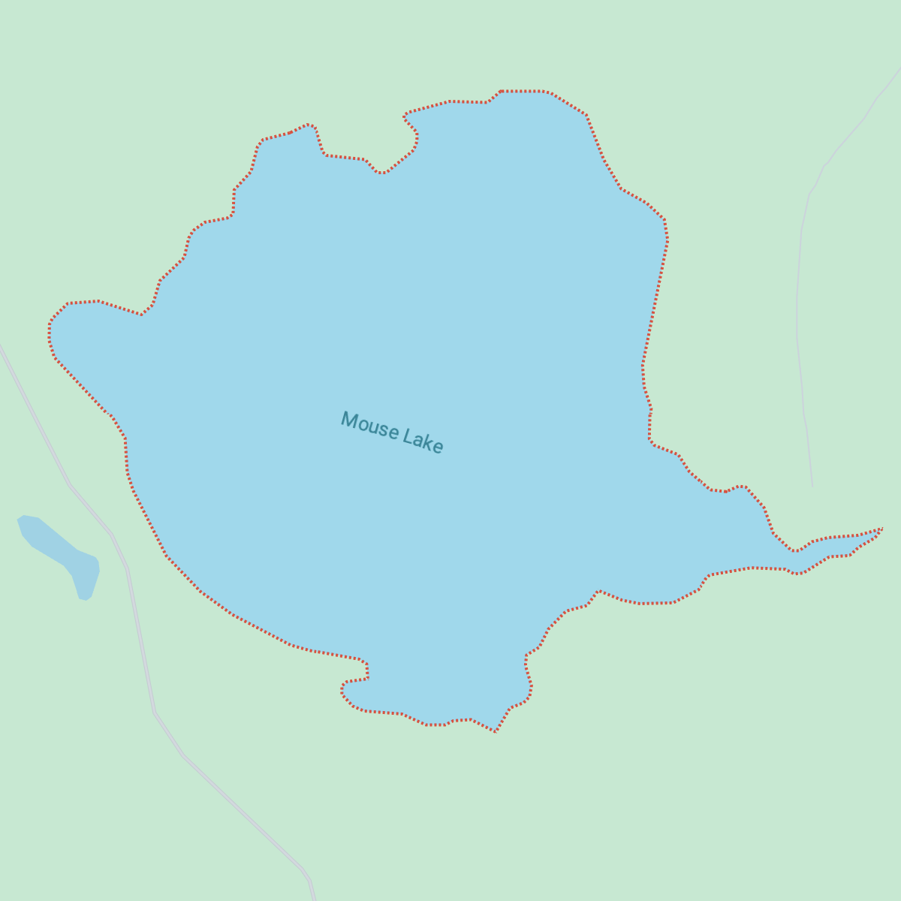
excepting for
the placid surface
of their reservoir.
The Emerald of 16 Peeks
holds special meaning
for those who practice Mouseism.
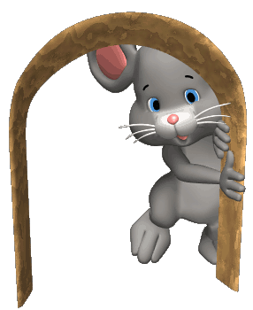
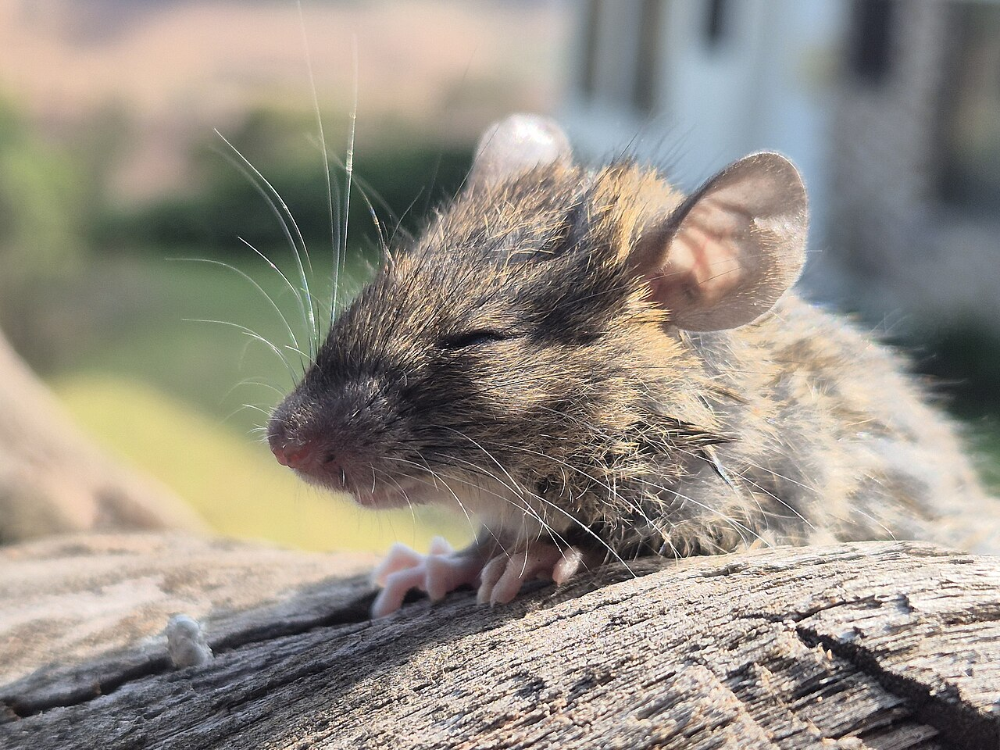
A mouse meditates on the 16 Peeks.
This is your brain.
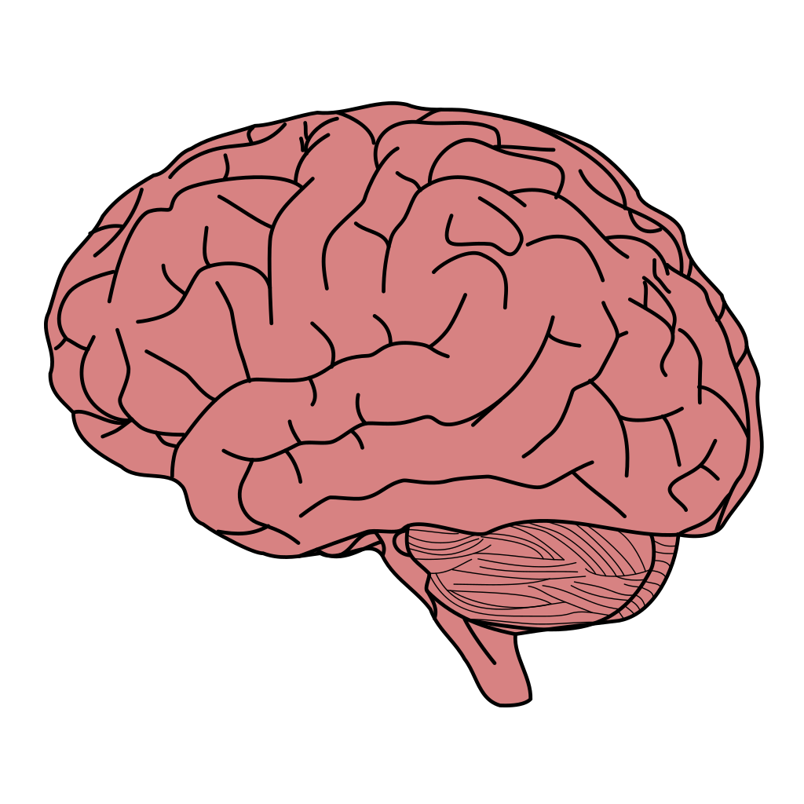
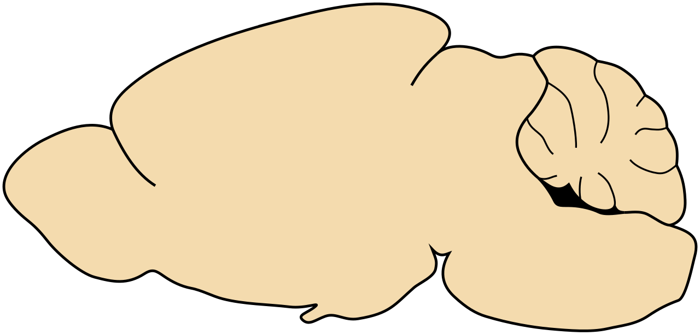
This is your brain on mouse.
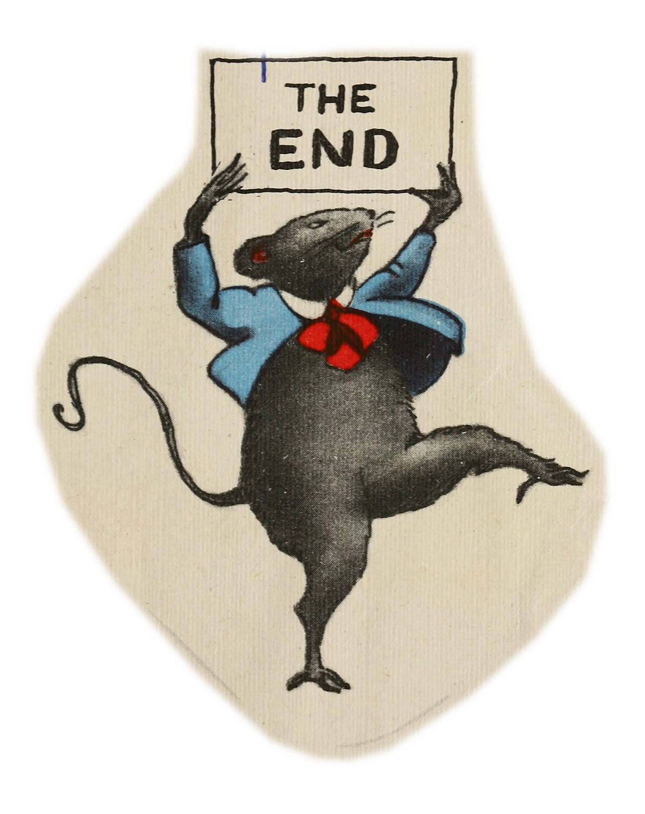